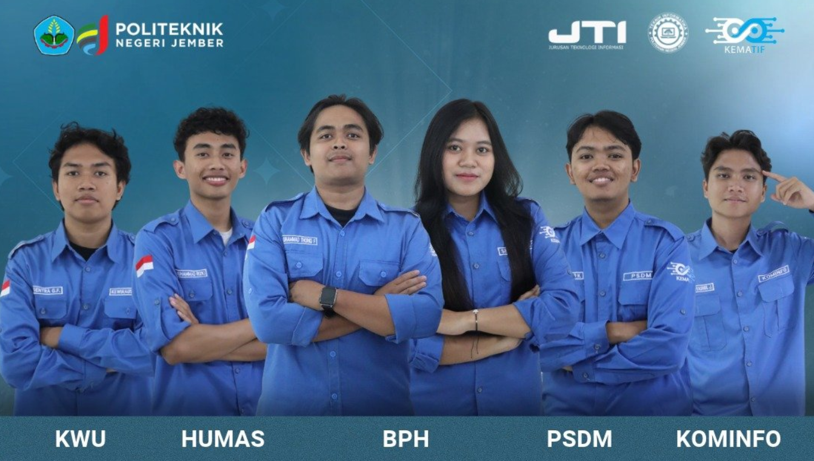
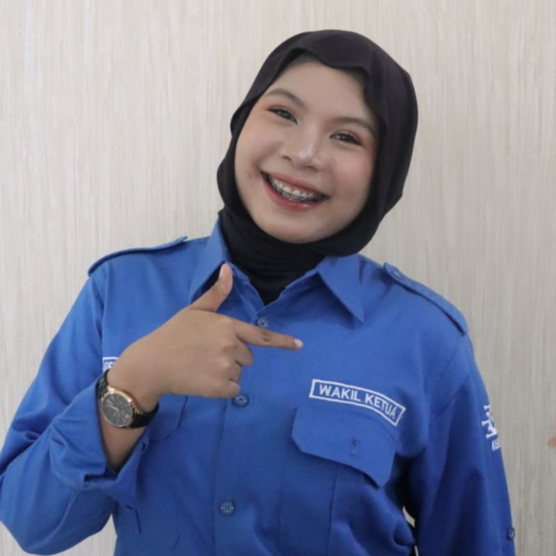
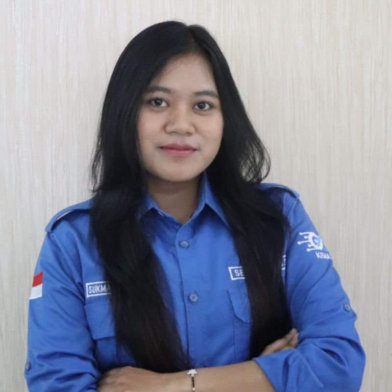
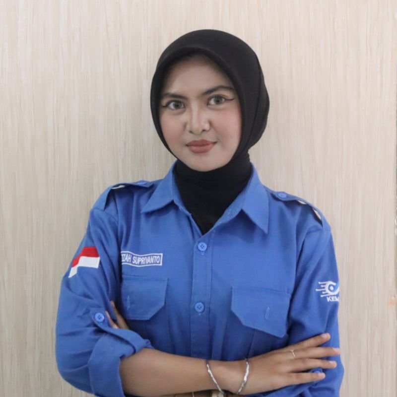
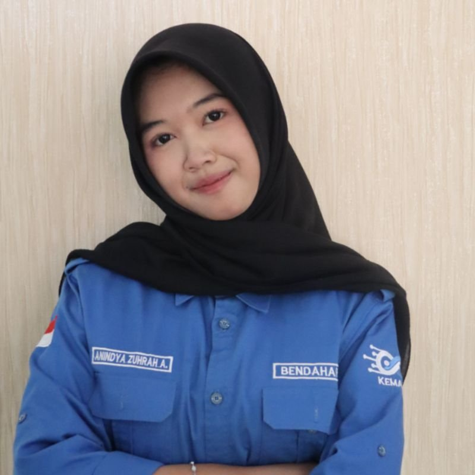

Muhammad Thoriq Firdaus
Ketua
BPHTemui tim berdedikasi di balik KEMATIF.

Tim pengurus yang berdedikasi di balik KEMATIF
Ketua
BPH
Wakil Ketua
BPHSekretaris 1
BPH
Sekretaris 2
BPH
Bendahara 1
BPH
Bendahara 2
BPHPilih divisi untuk melihat anggotanya.